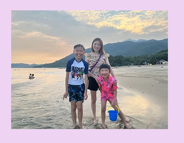
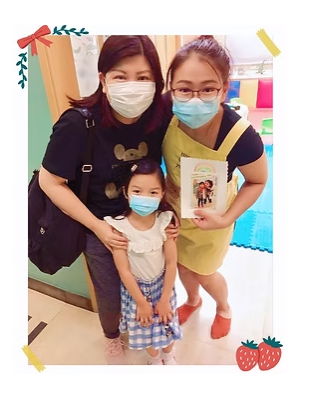
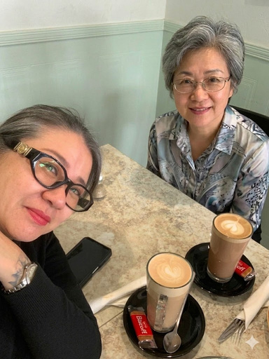

"I'm so happy! I achieved such a great result on my B1 exam! It's unbelievable. Just two months ago, I failed the exam, and I was so frustrated and confused... Miss Liz IBG has been incredibly helpful these past two months, constantly practicing and training my responses and helping me think more deeply. I went from DD to AB, it's truly unbelievable."
我太高興了！我的B1考試取得如此優異的成績！簡直難以置信...我的成績從DD提升到了AB，這真的太不可思議了。
"I just want to say 'Thank You so much' to Miss Liz for her knowledge and teaching skills in English teaching. She is very caring, She always encouraged me when I doubted myself and thought I would fail the B1 exam. Miss Liz helped me pass my exam, so I can apply for ILR."
我想衷心感謝 Liz 老師在英文教學上的專業知識與卓越技巧...在 Liz 老師的幫助下，我順利通過了考試，現在終於可以申請永久居留（ILR）了。
"Before I started learning with Miss, my English was almost zero, so I was very worried about the B1 exam. Miss was very patient, kind and always encouraged me... To my surprise, I passed on my first attempt! I was so happy because I never expected to pass the exam on my first attempt."

"My daughter Macy is active all the time and she doesn't like to sit still, so she hated learning in a traditional classroom while studying in Hong Kong... Macy enjoyed Miss Liz's lessons, and she always looked forward to the next week for another of her class. Later, my family and I have moved to the United Kingdom, and Macy has adapted her school life well here. I can't thank Miss Liz enough, as she truly helped Macy build up her English skills."
"I really appreciate Miss Liz's passionate in teaching children or even youth. Her teaching style is very different to the traditional method... My children were her students when they were still in kindergarten... My daughter even treats Miss Liz as her friend rather than a teacher. My children are lucky to have met such a good teacher at their early ages."

"I never expected that online learning could lead to going from resistance to confidently speaking English. About a year ago, Miss Liz has started teaching my son online... A few months later, my son's secondary school English teacher told me that my son's English was very good in the class; both my husband and I were so surprised to hear that."
"Miss Liz designs fun games for me to learn English. She is my favorite teacher. I like her very much, and I hope she can teach more children. She has a lot of experience. I have made a lot of progress in my English! After attending her class, I use less Cantonese-English. I love Miss Liz!"
"I am deeply thankful for Miss Liz's dedication and passion in teaching my son 💖 She used to help children to understand and focus on the lessons by playing games, storytelling, or even making ice-cream. Homework arranged by Miss Liz was centered around his interests, sparking his enthusiasm and leading to him speaking English fluently."
"Miss Liz is my daughter Hazel's favorite teacher. Hazel has been learning English from Miss Liz since she was 4 years old... Unfortunately, due to the pandemic and Miss Liz's decision to immigrate, we are unable to continue with face-to-face lessons. We changed to online English lessons and Hazel became excited as she could continue learning from Miss Liz... We feel truly blessed to have such an amazing English teacher."
